GIS MapInfo FAQ

Часть 2
Со времени публикации первого FAQ по ГИС MapInfo на этом сайте прошло немало времени и накопилось немало вопросов. На некоторые из них я отвечал лично, на некоторые посредством электронной почты или icq. Пришло время оформить это общение в виде следующей, второй части FAQ.
Позволю себе несколько оговорок. Прежде всего: для всех приведенных ниже случаев, по крайней мере, на стадии агрегации, использовалась MapInfo Professional версии 10.0. Соответственно, для иных версий вид интерфейса может существенно отличаться. В нескольких вопросах использовались решения, предложенные на страницах форумов команды GT4MI и проекта GIS-Lab, за что им огромное спасибо.
Еще раз повторюсь: вариантов решений задаваемых вопросов может быть несколько, но я буду давать лишь один, на мой взгляд, самый эффективный.
Итак, приступим.
GIS MapInfo FAQ
- Как отсортировать таблицу по нескольким колонкам?
- Как сделать, чтобы все подписи на чертеже были видны?
- Почему MapInfo всегда предлагает сохранять в «Мои документы»?
- Как изменить вид курсора?
- Как сохранить готовый отчет?
- Почему вычисленная площадь не совпадает с площадью по F7?
- А где в MapInfo X и Y?
- Какая конфигурация ПК оптимальна для работы с MapInfo?
- Почему при построении узлы «прыгают»?
- Почему не получается редактировать узлы прямоугольника?
- Как автоматически расставить точки в вершинах полигона?
- Скачал утилиту для MapInfo, куда мне ее положить?
- Почему не все подписи переводятся в текст?
- Как экспортировать карту в растр?
- Ненормальное поведение MapInfo!!!
- Как в MapInfo показать нужный кусок карты?
- Как найти все полигоны с «дырами»?
- Почему в список выводятся округленные координаты?
- Как лучше оформить таблицу в Отчете?
- Почему не открывается растр в формате TIFF?
- Как запустить MapInfo в «скрытом» режиме?
- Как поставить одному объекту несколько геолинков?
- Можно ли работать с MapInfo по сети?
- Почему неправильно печатается штриховка полигона?
- Почему знаки после запятой не копируются?
- Как сделать, чтобы всегда отображалось «положение курсора»?
- Почему я не могу редактировать данные?
- Как сделать всплывающую надпись?
- Пропало окно Информации. Что делать?
- Как в MapInfo построить 3D модель местности?
- Как добавить точки на пересечение объектов?
- Как восстановить информацию из удаленного файла?
- Как измерить длину проводимой линии?
- Как заполнить колонку данными из другой таблицы?
- Как выбрать все объекты одного типа?
- Как добавить новую проекцию в MapInfo?
- Почему при открытии рабочего набора «слетают» подписи?
- Как изменить значения временной колонки?
- Как сделать объект самым верхним на слое?
- Как перестроить индексы?
- Почему после вставки объекта экран «прыгает»?
- Как отключить автоматическую перерисовку окна?
- Как избавиться от масштабного коэффициента для вновь открываемых растров?
- Как разместить текст по кривой?
- Как можно обрезать/сшить растр?
- При импорте DXF вместо текста кракозябры. Как исправить?
- Как узнать площадь в процессе изменения полигона?
- Как в MapInfo выполнить скрипт?
- Чем можно посмотреть файлы MapInfo?
- Где можно почитать о MapInfo?
Как отсортировать таблицу по нескольким колонкам?
Действительно, в MapInfo нет встроенных средств, позволяющих эффективно сортировать данные. Опция «Упорядочить по колонке» инструмента «Выбрать» из меню «Запрос» отсортирует данные по возрастанию и только по одной колонке. Однако, можно обратиться к языку SQL.
Откроем окно построения запроса SQL (меню «Запрос» → «SQL-запрос»). Заполним поля следующим образом:
- поле «Выбрать колонки»: знак «*» (т.е. ВСЕ колонки)
- поле «из таблиц»: имя сортируемой таблицы (выбирается из выпадающего списка справа)
- поля «с условием» и «Группировать по колонкам» остаются пустыми
- поле «Сортировать по колонкам»: имена колонок, по которым надо отсортировать данные (также выбирается из выпадающего списка справа, можно использовать несколько колонок)
Результат выбора будет отсортирован по возрастанию и помещен в таблицу Selection.
В случае, если необходимо отсортировать по убыванию, придется писать запрос вручную. Открываем окно MapBasic (меню «Настройки» → «Показать окно MapBasic») и пишем:
select * from ИМЯ_ВАШЕЙ_ТАБЛИЦЫ order by ИМЯ_ПЕРВОЙ_КОЛОНКИ asc, ИМЯ_ВТОРОЙ_КОЛОНКИ desc into Selection Browse * From Selection ' если надо показать результат в окне Списка Map * From Selection ' если надо показать результат в окне Карты
Ключевым, в данном случае, моментом является построение запроса SELECT c параметром «ORDER BY» (сортировать по…) c уточнениями «ASC» (по возрастанию) и/или «DESC» (по убыванию).
Результирующую выборку Selection необходимо сохранить (меню «Файл» → «Сохранить копию» → «Selection»).
Как сделать, чтобы все подписи на чертеже были видны?
Перетащите Панели Инструментов на их законное место. Сделайте правый клик мышкой по Панели Инструментов. В появившемся окне выберите чек «Запомнить».
Тут возможно двоякое толкование проблемы:
- подписи накладываются друг на друга;
- подписи накладываются на иные элементы чертежа.
В первом случае решение вопроса довольно простое – в свойствах слоя (вызывается из Управления Слоями, двойной клик по оформляемому слою) в настройках правил подписывания следует отметить две опции: «Разрешить перекрытие текста» и «При перекрытии попробовать другое положение». Также не мешает проанализировать и проверить другие опции, такие как:
- «Режим показа» – если выбрано положение «Скрыть», подписи, естественно, показываться не будут;
- «Показывать в пределах» – т.е. настройки генерализации. Если указаны те или иные значения, подписи будут показываться только при масштабе карты, не выходящем за пределы этих величин;
- «Подписей не более» – опция ограничивает количество выводимых подписей в одном видовом окне Карты. В большинстве случаев лучше оставлять это поле пустым.
- «Запретить перекрытие текста» – если выбрана эта опция, то из двух (и более) совпадающих по положению подписей будет показана только одна.
В случае, если подписи накладываются на элементы чертежа, ничего, кроме ручного разнесения подписей в окне Карты предложить не могу. Единственно – их не обязательно при этом двигать мышкой, зачастую достаточно указать каждой подписи ее положение в стандартном диалоге:
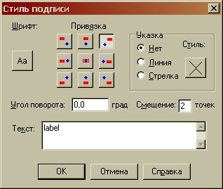Вызывается этот диалог двойным кликом на изменяемую подпись, причем вне зависимости от того, включен режим редактирования для слоя или нет.
Почему MapInfo всегда предлагает сохранять в «Мои документы»?
Потому что у вас так настроены пути рабочих каталогов.
Действительно, по умолчанию, после инсталляции MapInfo домашним каталогом, или в терминологии программы, стандартным каталогом размещения таблиц / рабочих наборов, служит каталог «Мои документы» конкретного пользователя. Настроить пути каталогов можно либо ДО инсталляции, путем внедрения в папку установки модификатора MODE.INI (см. документацию по инсталляции программы), либо непосредственно в процессе использования.
Для того, чтобы изменить пути размещения тех или иных рабочих файлов MapInfo, необходимо вызвать окно их настройки: меню «Настройки» → «Режимы» → «Каталоги…»
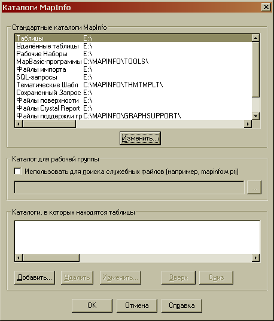Выделив соответствующую строку в окне «Стандартные каталоги MapInfo» и нажав на кнопку «Изменить» можно указать любой требуемый каталог.
Обратите внимание, что при изменении каталогов, содержащих программные (и пользовательские тоже, но это и так понятно) наборы данных, такие как программы MapBasic или тематические шаблоны, сами данные в новый каталог не переносятся и, следовательно, будут недоступны.
Как изменить вид курсора?
При создании новых линейных или площадных объектов MapInfo при незаконченном построении линии имеют тусклый серый цвет. В ряде случаев это довольно неудобно. Например, если вести оцифровку по изображению, заданному в градациях серого цвета, или просто по объекту с заливкой B1, строящуюся линию попросту не будет видно. К сожалению, разработчики до сих пор не реализовали хотя такую элементарную вещь, как изменение цвета фона окна Карты, не говоря уже о настройках стиля линии при создании объекта.
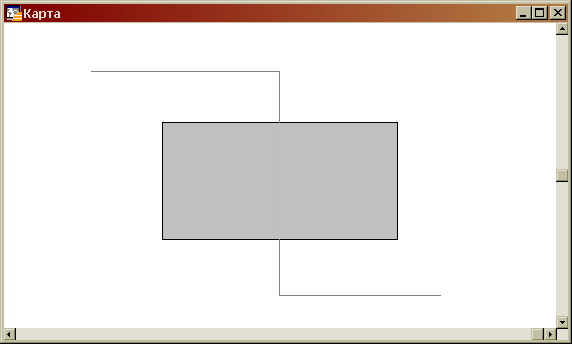И если уж работать становиться совсем некомфортно, можно попробовать изменить стиль курсора наведения. По умолчанию он тоже не слишком броский, однако, это вполне поправимо.
Для решения этой проблемы потребуется программа – редактор ресурсов. К примеру, бесплатный и запускающийся без инсталляции Resource Hacker.
Изображение курсора находится в файле mires.dll (для версии 10.0) или mires[НОМЕР_ВЕРСИИ].dll – для более ранних версий. Запустив ResHacker, ищем указанный файл в корневом каталоге MapInfo (по умолчанию: {Program Files}\MapInfo\Professional\mires.dll) и открываем его в редакторе («Файл» → «Открыть»).
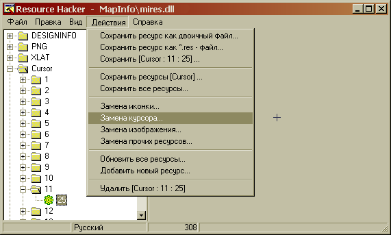В левой панели ищем куст с именем «Cursor» и разворачиваем его. В этом кусте описаны все курсоры, которые использует MapInfo. Нам нужен курсор с номером 11 – для версии 10.0 или 13 – для версии ниже. Развернув курсор и убедившись, что изображение совпадает, можно приступить к замене. В меню «Действия» выбираем пункт «Замена курсора». Откроется диалоговое окно, с фокусом в нужной позиции в поле «Заменить курсор». Теперь надо открыть вторично файл ресурсов mires.dll кнопкой «Файл с новым курсором» и выбрать новый курсор в поле «Новый курсор» и нажать кнопку «Заменить».
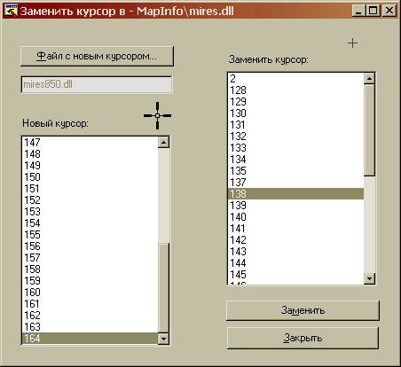Осталось только сохранить отредактированную dll (меню «Файл» → «Сохранить») и запустить MapInfo заново.
Единственно – небольшое предостережение и совет. Все правки вы вносите на свой страх и риск, а поэтому – сделайте предварительно копию оригинального файла mires.dll, так как функции Undo в редакторе не предусмотрено.
Кроме того, следует понимать, что подобные действия относятся к изменению исполняемого кода программы и, возможно, влекут за собой формальную утрату лицензии.
UPD: Пока писался этот FAQ вышла новая версия MapInfo Professional 10.5.2, в которой – о, чудо! – курсоры стали более-менее заметны. Ждем настроек типа линии :)
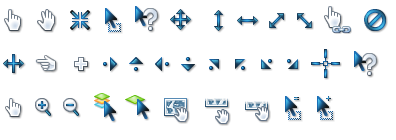Как сохранить готовый отчет?
Сохраните рабочий набор (меню «Файл» → «Сохранить Рабочий Набор…» или Ctrl+K). Оформление отчета, легенды, содержание косметического слоя, оформление и порядок слоев, набор открытых таблиц и вызванных окон – все, что не относится непосредственно к самим данным, но используется в работе – все это сохраняется MapInfo в рабочем наборе.
Если надо сохранить в какой-либо внешний формат, например, в растр, используйте команду «Экспорт окна» из меню «Файл».
Почему вычисленная площадь не совпадает с площадью по F7?
Потому что, скорее всего, используется проекция, отличная от План-Схемы. Согласно справке MapInfo:
«В большинстве случаев MapInfo Professional проводит либо декартовы, либо сферические вычисления. Обычно выполняются сферические вычисления; если координатная система – план-схема, то выполняются декартовы вычисления.»
Исходя из того, что функция Area() возвращает именно площадь географического объекта, результат ее вычислений явно зависит от выбранной проекции. В то время как сведения, полученные при вызове окна Геоинформации (клавиша F7), вычисляются программой с использованием функции CartesianArea(), которая возвращает значение площади, рассчитанное по декартовым алгоритмам.
Таким образом, результат вычислений функций Area() и CartesianArea() совпадут только для СК «План-Схема». В остальных же случаях, за исключением данных в координатах Долгота/Широта, для которых функции CartesianArea() возвращает ошибку, результаты вычислений этих функций будут различны.
А где в MapInfo X и Y?
Как ни странно – любой из кратких ответов не будет абсолютно корректными.
Прежде всего, необходимо понимать, что X и Y – это не более чем УСЛОВНЫЕ обозначения осей абсцисс и ординат в Декартовой системе координат.
По сложившейся традиции, в математике обозначение X'X принадлежит абсциссе, Y'Y – ординате. Представить это можно как полуось 0X направленную вправо, а 0Y – вверх.
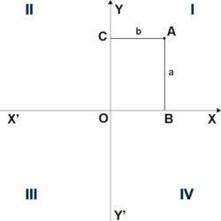ГЕО-науки же определяют местоположение объектов не на плоскости, а на сфере, и оперируют понятиями Широта и Долгота. Обозначение Широты в геодезии принято как B, Долготы как L.
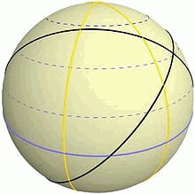Вид шара. Экватор (синий) делит шар пополам и пересекает меридианы (жёлтый) под углом 90°. Все сплошные линии этого рисунка — ортодромии. Пунктирные линии — линии одинаковой широты.
Однако, обозначения B и L применимы только для величин, исчисляемых в градусной мере, а для метрических используются те же самые X и Y соответственно. Так, на примере координат Останкинской телебашни:
| градусная мера (WGS-84) | метрическая мера (UTMN zone 37) |
| B=55° 49′ 11,0885″ | X=6186890.12 м |
| L=37° 36′ 41,9837″ | Y=413012.96 м |
где X – это расстояние на север от экватора до объекта, равное примерно 6200 км, а Y – это (500000 – 413012.96) = около 86 км до осевого меридиана 37 зоны.
Таким образом, можно сказать, что, в частном случае, X – ось север-юг, а Y – ось запад-восток, т.е. оси географической СК повернуты на 90° относительно Декартовой системы.
И вот только теперь, разобравшись с определениями, можно ответить на заданный вопрос.
Итак, в MapInfo используется математическая система координат. Ось Y направлена на север (в нашем полушарии), ось X – на восток. Или же:
| Широта | = | Latitude | = | B | = | Север | = | Y |
| Долгота | = | Longitude | = | L | = | Восток | = | X |
Как видите, изрядная путаница. Поэтому рекомендую использовать термины Широта/Долгота для градусов и Север/Восток для метрических измерений.
Какая конфигурация ПК оптимальна для работы с MapInfo?
MapInfo, в отличие от многих программ +/- аналогичного назначения, крайне не требовательна к системным ресурсам. Вот перечисление минимальных требований к системе для ОС Windows XP / Windows Vista / Windows 7:
- Оперативная память: 256 МБ RAM с процессором Pentium 400 МГц (рекомендуется процессор Pentium 1 ГГц)
- Место на диске: 1.5 гигабайта (GB)
- Графика: 16- или 24-битный вариант палитры цветов
- Монитор: Разрешение 800x600 пикселов
Как видно, требования весьма скромные. Таким образом, можно заключить, что на любом современном офисном компьютере MapInfo будет чувствовать себя так же хорошо, как и на самом «навороченом» по железу.
Получается, нет смысла приобретать мощную видеокарту, с 3D-ускорителем – MapInfo не использует ее ресурсы. Нет смысла ставить 2х-4х-8-ядерные процессоры – MapInfo не использует их ресурсы. Есть смысл увеличить производительность ядра, т.е. тактовую частоту процессора, объема кеша и тактовую частоту внешней шины, а также объем оперативной памяти. Но выигрыш, боюсь, будет не столь значительным, как вложение денег. Объем же жесткого диска регламентируется только объемом пользовательских данных. Единственное замечание – пожалуй, было бы целесообразно организовать хранение данных на отдельном от ОС и самой MapInfo диске, чтобы избежать потенциально прерывания на запросы операционной системы или программы.
Вместе с тем, следует учитывать, что MapInfo испытывает определенные трудности с выводом на печать больших объемов данных. Так что, полагаю, целесообразно потратиться на хороший плоттер, желательно со встроенной памятью, и – в случае сетевой печати – хороший, качественный принт-сервер.
Почему при построении узлы «прыгают»?
Т.е. вы указываете точку на карте, где должен, по вашему мнению, располагаться узел, а он смещается в произвольную сторону? Если да, то это вопрос известный и известны методы его решения.
Что бы разобраться с тем, почему так происходит, придется вспомнить, что MapInfo хранит свои координатные данные в виде 32-битных целочисленных переменных. И только потом, при ответе на запрос пользователя, переводит, что называется, «на лету» в 64-битные числа с плавающей точкой. Возможно, возникнет вопрос: «а почему бы сразу не хранить координаты в виде 64-битного числа, типа 153.34125?» Но, как ни парадоксально звучит, такой метод был бы намного более медленным и неэффективным из-за особенностей компьютерных вычислений. Да и вообще, в программировании самое простое решение далеко не всегда – самое быстрое.
Так вот. 32-разрядное целочисленная переменная в состоянии вместить целое число в диапазоне от 0 до (2^31)-1=2 147 483 647 или, округленно, 2 миллиардов. Т.е. MapInfo попросту не в состоянии запомнить большее количество чисел, в нашем случае – координат. Поэтому приходится идти на определенные жертвы и искусственно ограничивать количество возможных значений. Т.е., если привести пример, что называется, «на яблоках», то MapInfo не позволяет делить яблоко на части и хранит их только в целом виде. Пользователь может взять нож и разрезать яблоко, но когда отдаст его программе обратно, программа его опять аккуратно склеит и уберет в ящик. Потому как количество ячеек в ящике – строго лимитировано.
Учитывая вышесказанное, становится понятна подоплека такого поведения узлов при создании объекта. Узел (или, если угодно, точечный объект) принимает не те координаты, которые ему указал пользователь, а те, которые программа может обработать. Представляя ситуацию графически, можно нарисовать некую сетку, в которой точка может попасть только на узлы пересечения осей:
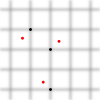Точность позиционирования координат, неважно в какой системе, считается при этом следующим образом. Прежде всего, необходимо узнать диапазон чисел, в котором происходят вычисления. К примеру, возьмем одну из зон проекции «Гаусса-Крюгера (Пулково 1942)». Это 6-градусная по широте полоса, по долготе опоясывающая весь мир. Границы зоны при этом составляют от -10002137 м (южное полушарие) до 10002137 м (северное). Широтные границы будут иметь несколько меньший диапазон. Таким образом, получается, что нам необходимо сохранять числа в диапазоне равном 20004274. Если разделить это число на 2 миллиарда (как ближайшее круглое десятичное целое от максимального 32-битного), получим приблизительно 0,01, т.е – 10 сантиметров.
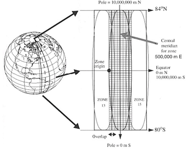Так же считается точность и для проекции «Долгота/Широта», только там числа в диапазоне от -180 до 180 изначально «округляются» как -1000 до +1000 соответственно.
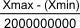Разобравшись, я надеюсь, с теорией, остается разобраться с практическим применением знаний. Можно ли все же повысить точность позиционирования координат? Да, можно. Сузив границы рабочей области, чтобы сетка виртуальных осей стала чаще. Чем чаще сетка – тем более близкое к требуемому положение займет объект. Самый простой пример. Есть таблица, подготовленная в проекции «План-Схема» с диапазоном рабочей области от -1000000000 до +1000000000 метров:
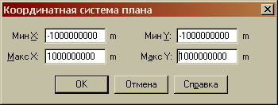Точность позиционирования будет равняться (+1000000000 – (-1000000000)) / 2000000000 = 1 (метр). 1 МЕТР!!! Это, согласитесь, очень много. Но стоит изменить хотя бы до таких значений:
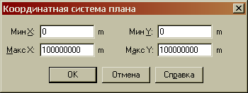и точность уже будет совсем другой (0 + 100000000) / 2000000000 = 0.05 метр = 5 см. Совсем другое дело, хотя и этого недостаточно. Значит – надо сокращать диапазон координат рабочей области и дальше, пока значения точности не станут приемлемыми.
Хорошо, это «План-Схема». Границы рабочей области задаются явно и их несложно изменить (меню «Файл» → «Сохранить копию», в окне выбора файла есть кнопка «Проекция»). А вот как быть с предустановленными проекциями, с той же Гаусса-Крюгера? Точность позиционирования выше уже приводилась – около 10 см, что чрезвычайно много для комфортной работы. Обратимся к Руководству Пользователя MapInfo Professional, раздел «Работа с системами координат и проекциями»:
Вы можете указать предельные границы для координатной системы в файле MAPINFOW.PRJ.
Чтобы сделать это, добавьте 2000 к номеру проекции и укажите границы после списка параметров проекции. Общая форма следующая:
имя, номер_проекции + 2000, параметры_проекции, x1, y1, x2, y2
Руководствуясь полученными знаниями и здравым смыслом, откроем в блокноте файл MAPINFOW.PRJ (находится в корневом каталоге программы) и найдем запись требуемой проекции:
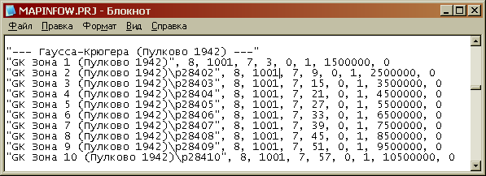Изначальную запись:
"GK Зона 7 (Пулково 1942)\p28407", 8, 1001, 7, 39, 0, 1, 7500000, 0
правим в соответствии с Руководством:
- номер проекции: 8+2000 = 2008
- x1: 6500000
- x2: 8500000
- y1: 5000000
- y2: 7000000
Строка приобретет вид:
"GK Зона 7 (Пулково 1942)\p28407", 2008, 1001, 7, 39, 0, 1, 7500000, 0, 6500000.0, 5000000.0, 8500000.0, 7000000.0
Рассчитаем полученную точность^
(8500000 - 6500000) или (7000000 - 5000000) = 2000000 / 2000000000 = 0,001 метр, т.е. 1 миллиметр. Более чем достаточно.
Почему не получается редактировать узлы прямоугольника?
Потому что прямоугольник, равно как скругленный прямоугольник, эллипс и дуга – это отдельные типы объектов, не имеющие узлов. Для того, чтобы можно было редактировать их узлы, эти объекты предварительно следует преобразовать в области или полилинии. Обратите внимание, что обратное преобразование (полилиния в дугу, к примеру, невозможно).
Как автоматически расставить точки в вершинах полигона?
Автоматически не получится. В MapInfo нет подобного встроенного инструмента. Следует воспользоваться одной из сторонних утилит, их много, в том числе в составе официально диска установки программы (папка RUSUTIL).
Это если требуется делать эту операцию постоянно и массово. В случае разового использования вполне подойдет приведенный ниже способ «полуавтоматического» создания точечных объектов в узлах выбранного полигона.
Для начала в окне Карты делаем какой-либо слой редактируемым, выбираем исходный регион и открываем окно MapBasic (меню «Настройки» → «Показать окно MapBasic»).
В открывшемся окне вводим следующий код:
Dim i as Integer, obj as Object Set CoordSys SelectionInfo(1) Selection obj=Selection.obj i=0 i=i+1 Create Point (ObjectNodeX(obj,1,i),ObjectNodeY(obj,1,i))
После окончания ввода (подтверждаем ввод нажатием клавиши Enter) сформируется точка в первом по счету узле выбранного объекта. Затем следует переместить курсор опять на строку 3 и опять нажать Enter, и так – пока все узлы не будут пройдены. Если надо сформировать точки на еще один полигон – перемещаем курсор на строку 2 и повторяем все действия заново.
Скачал утилиту для MapInfo, куда мне ее положить?
Никуда модуль, в принципе, класть не надо. Вернее, так – от простого перекладывания файла толку не будет.
Есть, как минимум, 3 варианта запуска утилиты MapBasic (*.MBX):
- Запустить утилиту из проводника Windows. Двойной клик на файле с расширением MBX автоматически запустит программу MapInfo с активированной утилитой.
- Запустить утилиту из MapInfo. Меню «Программы» → «Запустить программу MapBasic». В появившемся окне найти нужный файл.
- Добавить утилиту в список загружаемых и вызвать из этого списка. Меню «Программы» → «Каталог программ» → «Добавить». После добавления в окне списка отмечаем нужную утилиту чеком на позиции «Загрузить», жмем кнопку ОК.
Надо заметить, что где и как отобразится запущенная утилита, зависит от ее функционала. Стандартные места размещения (если только у автора не было каких-либо особых предпочтений) это:
- В списке программ меню «Программы» в виде нового пункта меню.
- На Панели Инструментов «MapBasic» в виде кнопки/кнопок.
- В корневом меню MapInfo в виде нового пункта меню.
Почему не все подписи переводятся в текст?
Известная проблема. При переводе подписей в текстовые объекты преобразуются только те, что видны в окне Карты. Ну, еще те, что двигали руками. А в чем причина?
Для перевода подписей в надписи в MapInfo используются 2 программы из стандартной поставки: «Автоподписи» (AUTOLBL.MBX) и «Подписи»(LABELER.MBX) и всего 1, насколько мне известно, оператор MapBasic – AutoLabel. К сожалению, цитирую из Справочника: «Подписываются только те объекты, которые в данный момент видны в окне Карты.» Таким образом, это не ошибка программы, это ее естественное поведение.
Тут дело в заключается в том, что MapInfo не хранит надписи (как, впрочем, и многое другое) на карте, а динамически подгружает в видимом окне. За счет чего, кстати, и достигается быстродействие программы и непритязательность к ресурсам. Однако, это не позволяет преобразовать подписи всех объектов в текст, если они не вмещаются в окно.
Решения, хорошего и качественно, здесь нет. Есть паллиативы.
Во-первых, можно «подвигать» подписи. Тогда они «заякоряться» на карте и будут видны всегда.
Можно выставить масштаб окна, вмещающий всю площадь работ и подписать объекты минимальным размером шрифта. А после преобразования, выставив нужный масштаб, указать нужный размер шрифта текста. Но есть проблемы.
Есть еще один способ. Выставить нужный масштаб, преобразовать подписи, сдвинуть экран на известную величину, преобразовать подписи, сдвинуть экран… Ну и так далее, пока вся площадь не будет обработана.
Можно еще комбинировать способы. Идея не ахти, но и само использование текста не вполне соответствует парадигме ГИС, не так ли?
Как экспортировать карту в растр?
В принципе, делается это очень просто. В меню «Файл» есть пункт «"Экспорт окна», выбираете его, выставляете нужные значения и получаете на выходе требуемый результат.
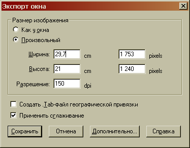Правда, как всегда, есть нюансы. Указанная опция экспортирует в растр именно окно, т.е. то, что видно на экране, а не всю карту. Можно попробовать показать в окне всю карту, а потом, при экспорте, увеличить разрешение: чем больше dpi, тем четче выглядит картинка. Однако это не снимает проблему генерализации самой карты, так как в масштабе 1:1000 и в масштабе 1:10000 карта выглядит все по разному.
Поэтому рекомендуется экспортировать в растр не само окно Карты, а предварительно оформленный Отчет. Там-то уж масштаб можно настроить точно. Для этого нажимаем F5 и в появившемся диалогом окне указываем опцию «Чистый лист». Далее следует настроить размер листа, на котором мы собираемся разместить карту. Это делается из «Настроек печати» в меню «Файл». После того, как лист отчета стал нужного размера, на него можно поместить рамку, в которой будет отображаться карта. Инструментом «Рамка» из Панели Инструментов 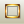рисуем прямоугольник на листе отчета, а затем настраиваем все нужные параметры: какое окно вывести в рамку отчета, каковы размеры рамки и какой масштаб отображения. Кстати, стиль оформление рамки задается той же кнопкой, что и стиль полигонов.
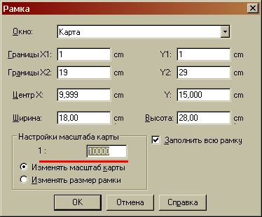После того, как отчет оформлен, его можно так же экспортировать в растр.
Остается решить одну проблему. Окно Отчета ограничивает рабочее поле стандартными размерами листа. Далеко не все принтеры позволяют установить пользовательские размеры бумаги и даже самые лояльные не позволят сделать лист, размером больше, чем А0. Что делать, если надо экспортировать именно карту и именно всю и именно в нужном масштабе, а размеры карты превышают возможности принтера? Тут на помощь приходит виртуальный принтер PDF – MapInfo PDF Printer или любой другой.
Печать будем производить из окна Карты. Настройки масштаба самой карты на данном этапе не важны. Нажимаем Ctrl+Р (меню «Файл» – > «Печатать…»), в диалоге «Печать» жмем на кнопку «Режимы». Появится диалог «Печать карты»:
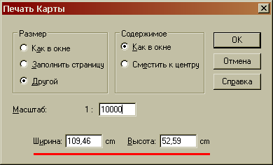В этом диалоге выставляем требуемый масштаб и переписываем (или запоминаем) получившиеся величины ширины и высоты. Приняв изменения, в том же диалоге печати нажимаем кнопку «Свойства» и на вкладке «Параметры бумаги» выбираем пользовательский размер Custom. Кнопка «Произвольный» позволит задать размеры бумаги, что и надлежит сделать, вспомнив записанные ранее.
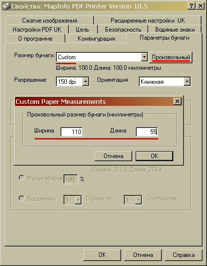Все. Теперь достаточно нажать 3 раза ОК и растровый файл в формате PDF будет сохранен там, где вы укажите.
Ненормальное поведение MapInfo!!!
Программа перестала загружаться или выдает при загрузке непонятные сообщения? Объекты не выбираются, выборка Selection недоступна, при SQL-запросе программа вылетает с ошибкой?
Примеров некорректной работы программы можно привести массу, и в каждом случае надо исследовать причины такого поведения отдельно. Однако можно дать несколько универсальных советов, которые позволят снять большинство подобных проблем:
- Проверьте и отключите программы MapBasic из автозагрузки (меню «Программы» → «Каталог программ»). Особенно это касается т.н. «самописных» программ, утилит не из стандартной поставки MapInfo.
- Очистите все временные папки Windows (Windows\Temp\; Documents and Settings\%UserName%\Local Settings\Temp\ и т.д.), вручную или с использованием специальных утилит.
- Удалите стартовый рабочий набор (Documents and Settings\%UserName%\Application Data\MapInfo\MapInfo\MAPINFOW.WOR).
- Отключите возможность чтения параметров печати из рабочего набора (меню «Настройки» → «Режимы» → «Стартовые»).
- Удалите дополнительные рабочие каталоги данных (меню «Настройки» → «Режимы» → «Каталоги»).
- Удалите из системы неиспользуемые шрифты (если их установлено много) и вернитесь к исходным настройкам nls, если вносили изменения в реестр.
- Проверьте компьютер на наличие вирусов специальными утилитами.
Как в MapInfo показать нужный кусок карты?
Если известны точные координаты центра окна, то через диалог «Показать по-другому» (ЛКМ → «Показать по-другому» или соответствующий инструмент на Панели Инструментов ). Введите координаты в поля «Центр окна X / Y» и нажмите ОК.
Если необходимо найти и показать на карте выбранный объект/объекты, то можно воспользоваться командой «Найти выборку» из меню «Запрос». «Горячие» клавиши для поиска выборки:
- Ctrl+A – показать выборку во всех окнах (в т.ч. в окне Списка);
- Ctrl+G – показать выборку только в текущем окне Карты.
В результате выполнения этой команды окно Карты будет отцентрировано по центроиду выборки. Учитывайте, что при излишне большом или излишне малом значении масштаба окна Карты селектированные объекты могут быть попросту не видны.
Как найти все полигоны с «дырами»?
Список сложных полигонов можно получить при помощи SQL-запроса, а вернее, двух подряд. Откройте окно MapBasic и введите следующую строку:
Select * from ИМЯ_ВАШЕЙ_ТАБЛИЦЫ Where Int(ObjectInfo(obj,21)) Into TempTable Select * from TempTable Where Int(ObjectInfo(obj,21))>1
В результате выполнения запросов будут выбраны все полигоны сложной формы (как с вырезанной площадью, так и комбинированные).
Почему в список выводятся округленные координаты?
Скорее всего, потому, что для хранения координат используется поле вещественного типа Float. Настройки поля таковы, что в окне списка число в ячейке отображается с двумя знаками после запятой. Хотя хранит в памяти гораздо большее количество знаков, и если щелкнуть мышкой по значению в ячейке, в этом можно убедиться лично:
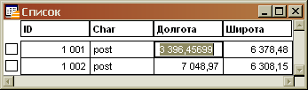Поэтому, если необходимо воспользоваться полным значением ячейки, необходимо либо перестроить таблицу, указав в качестве типа десятичное число с необходимым количеством знаков после запятой, либо настроить отображение полей. Для этого надо щелкнуть правой клавишей мышки в любом месте активного списка и выбрать в контекстном меню опцию «Внести поля…». В диалоговом окне для поля типа Float изменяем колонку списка по по выражению:
Format$(ИМЯ_КОЛОНКИ, "##########.##########")
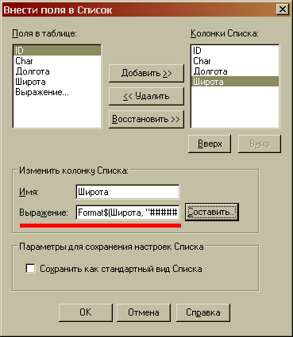Теперь все числа будут отображаться с максимальным количеством знаков после запятой.
Как лучше оформить таблицу в Отчете?
Отсутствие в MapInfo встроенного инструмента создания и оформления таблиц в Отчете заставляет идти на различные ухищрения. Каждый из нижеприведенных способов в чем-то лучше и в чем-то хуже другого. Однако сразу надо оговориться – идеального решения, увы, не существует. Итак…
Вариант 1.
Если данные занесены в таблицу MapInfo, необходимо открыть эту таблицу в окне Списка, а затем поместить в окно Отчета рамку (фрейм) с этим списком. Метод хорош своей простотой и доступность, однако обладает рядом недостатков. Не все данные удобно хранить в таблицах MapInfo, не все данные надо выводить в отчете. Можно настроить положение и число колонок Списка (меню «Список» → «Отобрать поля»), но нельзя изменить названия колонок и оформление таблицы.
Вариант 2.
Начертить таблицу в окне Отчета вручную. Метод хорош для небольших таблиц на пару строк. Позволяет создать любое оформление и вывести любые данные. Но трудоемкость процесса и последующие неудобства, как то – невозможность точного позиционирования, проблемы с послойностью, увеличение длительности загрузки рабочего набора – заставляют задуматься об альтернативе.
Вариант etc.
Из альтернативных вариантов, также, не менее очевидный – использовать встроенный генератор отчетов Cristal Report. Но… Опять «но». Встроенный в MapInfo Cristal Report, из-за особенностей лицензирования этого продукта не позволяет встраивать в свои отчеты динамическую картинку из Карты. В официальной справке предлагается экспортировать изображение в растр и вставлять его затем как картинку. И хотя подобная проблема довольно просто решается средствами MapBasic, готовых решений я пока еще не видел. Плюс к тому, если не стоит задача вывода нескольких не то что десятков – сотен и тысяч однотипных отчетов, результат не покроет трудозатраты на создание шаблона. Всерьез рассматривать этот способ создания таблицы я бы не стал, по крайней мере, исходя из того, что те, кто реально могут это сделать в Cristal'е – не задаются вопросом «как». Увы.
Поэтому следует рассмотреть иные пути решения проблемы. К примеру, включить таблицу в отчет как растр.
Для этого потребуется установленный в системе какой-нибудь виртуальный принтер с возможностью печати в растр, например, PDFCreator. Создаем таблицу в, допустим, Microsoft Word и отправляем ее на печать через PDFCreator, выбрав в качестве выходного формата любой из растровых (но лучше PNG – оптимальное сочетание размер/качество).
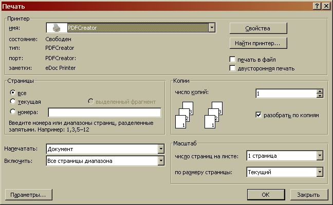В результате получится растровая копия таблицы. Затем все просто – открываем растр в MapInfo в новом окне Карты и вставляем фреймом в отчет. Растр можно отрывать даже без регистрации, т.е. в режиме «Показать», но тогда трудно будет подобрать масштабный коэффициент. Если требуется точное соблюдение размера шрифта, то придется регистрировать. Выбираем проекцию «План-Схема (сантиметры)» и, выбрав начало какой-нибудь колонки за 0, привязываем растр по размерам колонок/строк. В фрейме же выставляем после регистрации масштаб 1:1.
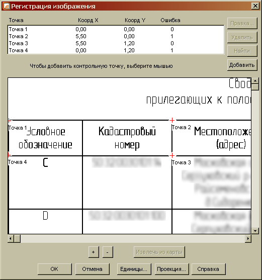Что же касается минусов подобного решения, то они очевидны. Множество промежуточных форматов и телодвижений, необходимость держать на диске кучу дополнительных файлов, и несколько открытых дополнительных окон в рабочем наборе. И что самое печальное – для того, чтобы поменять один единственный символ всю последовательность манипуляций, кроме, разве что, регистрации растра, придется повторить заново. Но для окончательного оформления чертежа для печати способ очень даже неплохой.
А вот если звезды выстроились так, что требуется и создать сложнооформленную таблицу, и иметь возможность ее редактировать в процессе, то здесь уже средствами MapInfo для подготовки печати не обойтись.
Можно попробовать подготовить отчет напрямую в Microsoft Word, вставив окно карты в лист как OLE-объект. Но Word имеет очень неприятное ограничение на размер листа (не более 55,87 см по любому измерению), а карты, как назло, обычно приходится печатать на размеры вплоть до А0.
Поэтому рекомендую посмотреть в сторону Microsoft Office Publisher, также из состава Microsoft Office. Publisher – настольная издательская система от Microsoft. Это приложение начального уровня, отличающееся от Microsoft Word тем, что акцент в нём делается на проектирование разметки страницы, а не на оформление и проверку текста. Простой, интуитивно понятный и главное – знакомый по другим продуктам Microsoft интерфейс программы позволяет работать с ней без какого либо специального обучения.
Запустив Publisher, создаем новую публикацию (в терминологии программы) обычным «Файл» → «Создать». Из «Параметров страницы» настраиваем размер и ориентацию листа, создаем требуемое зарамочное оформление и – внедряем OLE-объект карты MapInfo (меню «Вставка» → «Объект» → «MapInfo Map»):
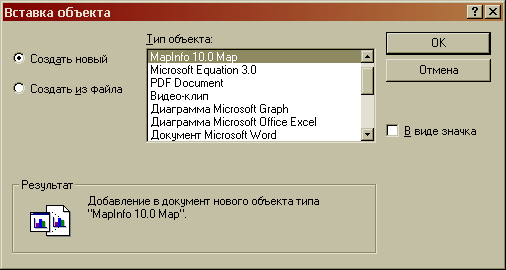На странице публикации появится рамка с логотипом MapInfo, а в строке меню добавится 2 пункта: «Таблица» и «Карта». Из меню «Таблица» → «Открыть таблицу» открываем требуемый набор данных (только таблицы, рабочие наборы по понятным причинам, открыть нельзя) и настраиваем его отображение так же, как привыкли в MapInfo – через «Управление слоями» и прочие инструменты.
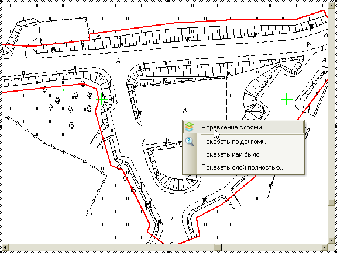Таким же образом можно внедрить как таблицу Word или Excel, так и любой другой документ, поддерживающий OLE-объекты.
Метод, в принципе, не имеет недостатков и именно его я рекомендую для создания отчетов с большим объемом сопроводительной информации.
Почему не открывается растр в формате TIFF?
Вот выдержка из официального описания поддерживаемых форматов:
« (…) растровые форматы изображений, поддерживаемые MapInfo Professional:
- (…)
- TIF – формат Geographic Tagged Image (GeoTIFF)
- TIF – формат Tagged Image (TIFF)
- TIFF Revision 5.0, монохромный (класс B), без сжатия, монохромный (класс B), без сжатия, сжатие PackBits, 8 бит оттенков серого (класс G), без сжатия, 8 бит цветной (класс P), без сжатия, 24 бит цветной (класс R), без сжатия
- TIF – формат файла Tagged Image (TIFF) CMYK
- TIF – формат файла Tagged Information (TIFF) CCITT Group 4
- TIF – формат файла Tagged Image (TIFF) LZW
(…) »
Как видно, MapInfo не поддерживает изображения в формате TIFF с режимом больше чем 8 бит на канал. Правда, есть сведения, что еще поддерживается 16-битный режим формата Erdas Imagine IMG.
Кроме того, в MapInfo для формата TIFF поддерживается только сжатие LZW и Group 4, остальные же – увы. Да и с LZW вроде как есть проблемы, поэтому – надо относиться к алгоритмам сжатия с осторожностью и, очевидно, предпочтения отдавать изображениям без сжатия.
Как запустить MapInfo в «скрытом» режиме?
Иногда возникает необходимость запустить ту или иную утилиту MBX, не показывая при этом пользователю окно MapInfo. Добиться этого эффекта можно вызвав утилиту на выполнение строкой типа:
mapinfow -automation ИМЯ_ВАШЕЙ_УТИЛИТЫ.mbx
Как поставить одному объекту несколько геолинков?
Это вполне возможно сделать, но только начиная с версии MapInfo Professional 10.0. Разработчики в корне переработали диалог добавления геолинка и теперь он выглядит так:
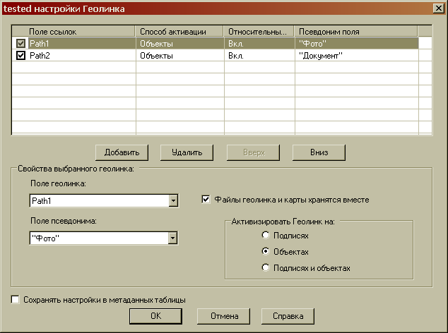Можно добавлять не только неограниченное (практически) количество вариантов ссылок, но и напрямую указывать правило использования относительных путей для каждого геолинка, а также – правила активизации. При добавлении нескольких записей в окне геолинка пользователь может выбрать самостоятельно, какую из ссылок активировать:
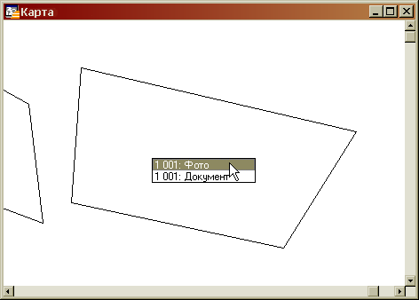Можно ли работать с MapInfo по сети?
Смотря что подразумевается под «работой по сети».
Запустить программу MapInfo, находящуюся на удаленной машине или получить доступ к файлам, находящимся в сетевой папке – да, можно, почему бы и нет. Все зависит от настроек прав пользователя и сетевых папок.
Получить одновременный доступ к файлам, находящимся в сетевой папке – тоже да. Но только на просмотр. А вот полноценно редактировать открытую таблицу не получится ни там, ни там.
Если же требуется осуществить одновременное редактирование данных несколькими пользователями, то здесь придется в корне изменить подход к хранению данных. Т.е. отказаться от использования файловых таблиц и хранить объекты в виде записей в удаленной базе данных. В MapInfo можно использовать для этого базы данных различных СУБД (Oracle, MS Access, SQL Server), вплоть до бесплатной PostGIS (реализовано в версии 10.0).
Однако следует помнить, что использование удаленных баз данных накладывает некоторые ограничения на тип географических объектов:
- Oracle не поддерживает дуги, эллипсы, прямоугольники и скругленные прямоугольники.
- SQL Server Spatial не поддерживает дуги и линии без явно заданных точек.
- SQL Server SpatialWare не поддерживает дуги, эллипсы и скругленные прямоугольники.
- PostGIS не поддерживает дуги, эллипсы, прямоугольники и скругленные прямоугольники.
Почему неправильно печатается штриховка полигона?
Если речь идет о несовпадении частоты штриховки на экране и распечатке, то следует отключить опцию «Масштабировать штриховку» в диалоге «Настройки печати» (меню «Настройки» → «Режимы…» → «Параметры вывода…» → вкладка «Печать»):
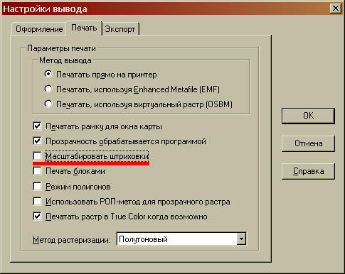Почему, когда я копирую х, у из Excel, знаки после запятой не копируются?
Ответ очень прост. Разделителем целой и дробной части в MapInfo служит знак точки («.»), в то время как в Microsoft Excel разделитель совпадает с указанным в региональных настройках (меню «Пуск» – «Настройка» – «Панель управления» – «Язык и региональные стандарты» – кнопка «Настройка», вкладка «Числа»), т.е., скорее всего, запятая («,»).
При копировании координаты вида «72,1316» MapInfo воспринимает точку как нечисловой символ и отбрасывает весь остаток числа. Следует либо изменить региональные настройки, выставив разделителем целой и дробной части запятую. Но – этот способ может привести к ошибкам в работе других программ. Либо – предварительно конвертировать числовые значения к самом Excel, например, формулой типа: =ПОДСТАВИТЬ(#ССЫЛКА_НА_ЯЧЕЙКУ!;",";".";1)
Как сделать, чтобы всегда отображалось «положение курсора»?
В левом нижнем углу окна программы есть поле, в котором, по умолчанию, отображается размер окна Карты. Щелкнув по нему, можно было выбрать из списка опцию «Положение курсора» и в поле выводилась информация о текущем положении курсора в окне активной Карты в заданных единицах. Можно настроить иначе: из меню «Карта» вызвать диалог «Режимы окна Карты» и отметить в секции «Показывать внизу» опцию «Положение курсора».
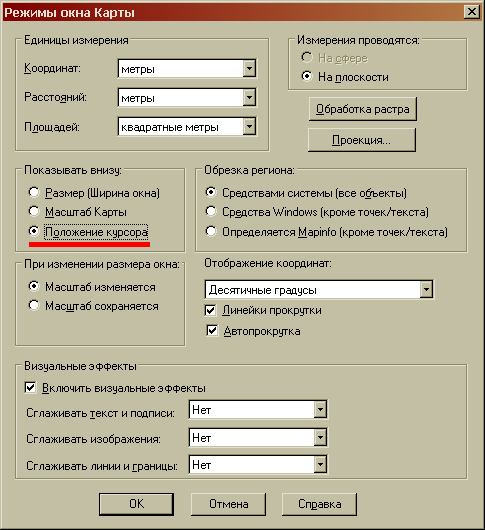Так как отображение положения курсора применяются только для активной карты, опции, отвечающей за глобальное настройки, нет. Но эта настройка сохраняется в рабочем наборе в виде строки:
Set Map Display Position
Почему я не могу редактировать данные?
Вариантов несколько:
- Самый простой – не включено редактирование слоев. В окне Карты вызовите менеджер слоев (Ctrl + L) и отметьте чеком «Изменяемый: Вкл.» слой, содержащий редактируемые объекты.
- Если речь идет об открытых в MapInfo файлах TXT, DBF, XLS и прочих, содержащих текстовую информацию, то такие таблицы попросту нельзя редактировать. К ним можно присоединить географическую информацию в виде точек (если в файле содержится координатная привязка), но редактировать их нельзя. Сохраните копию такой таблицы (меню «Файл» → «Сохранить копию…») и работайте дальше уже с этой копией.
- Файл закрыт для редактирования системой. Проверьте, не стоит ли на файле атрибут «Только чтение», и если стоит, снимите его (правый клик мыши на файле в окне Проводника Windows → «Свойства» → секция «Атрибуты»).
Как сделать всплывающую надпись?
Настройте подписи в диалоге свойств слоя, но показ этих подписей не включайте. Теперь, при наведении курсора на объект из этого слоя (и при условии, что слой будет верхним), под курсором появиться подсказка с содержимым подписи этого объекта. 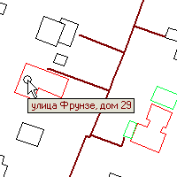
Пропало окно Информации. Что делать?
И тема, и ответ на вопрос честотянуты отсюда. Сам в свое время столкнулся с подобной проблемой, решил ее с довольно-таки значительными танцами. На форуме подсказали гораздо более красивый и, что важнее, абсолютно правильный вариант решения. Итак, если пропало окно Информации, надо выполнить команду MapBasic:
Set Window Info Position (0, 0)
Вводим указанную строку в окно MapBasic, «(…) Жмем Enter. О чудо – окно появилось…» (с)
Кстати, подобную конструкцию можно использовать не только для окна Информации. Например, такая вот строка:
Set Window 1002 Position (0,12) Width 15 Height 4 Hide ' set MapBasic position
помещенная в конец файла MAPINFOW.MNU лично у меня управляет дефолтным положением окна MapBasic. Здесь 1002 – это код окна MapBasic, Position (0,12) – положение левого верхнего угла окна, Width и Height – ширина и высота окна соответственно в принятых единицах измерения.
Вот еще кода окон:
| Название | Алиас | Код |
| Окно программы MapInfo | MapInfo | 1011 |
| Окно MapBasic | MapBasic | 1002 |
| Окно Справки | Help | 1001 |
| Окно «Статистика» | Statistics | 1010 |
| Окно «Легенда» | Legend | 1009 |
| Окно «Информация» | Info | 1008 |
| Окно «Линейка» | Ruler | 1007 |
| Окно «Сообщение» | Message | 1003 |
Как в MapInfo построить 3D модель местности?
Вообще-то, никак. MapInfo – работает только с 2D поверхностью. Поэтому, если планируется серьезная обработка трехмерных моделей, MapInfo – далеко не лучший выбор ПО.
Вместе с тем, если необходимо создать что-то подобное на 3D, для иллюстрации, к примеру, вполне можно использовать тематическую карту: меню «Карта» → «Создать тематическую карту…» → куст «Поверхность» → шаблон «Поверхность, стандартная».
Кроме того, в состав стандартной поставки MapInfo входит утилита «Построение регулярной поверхности» (GridTools.MBX), очень простая в использовании, с минимумом настроек, но дающая довольно неплохие результаты (если не предъявлять завышенные требования).
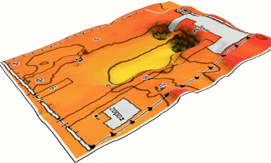Также существует сторонняя разработка Vertical Mapper – модуль трехмерного анализа для MapInfo. С помощью VM можно создавать трёхмерные модели по имеющимся координатам, проводить различные исследования по полученным моделям. Vertical Mapper обеспечивает механизм более сложного анализа данных из различных слоев карты.
Как добавить точки на пересечение объектов?
С помощью команды «Добавить узлы» из меню «Объекты». Порядок действий таков:
1. Делаем слой с изменяемыми объектами редактируемым.
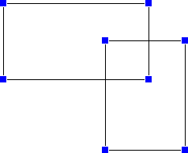2. Выделяем объекты, в которые надо добавить узлы.
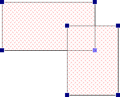3. Делаем эти объекты изменяемыми (меню «Объекты» → «Выбрать изменяемый объект»)
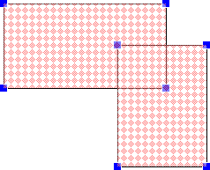4. Выбираем объекты, по пересечению с которыми надо добавить узлы (в приведенном примере выборки совпадают, т.е. узлы добавятся на все объекты, попавшие в выборку).
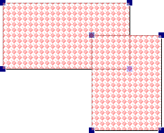5. Выполняем команду «Добавить узлы»
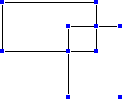Надо заметить, что изменяемые объекты и объекты, по которым проводятся изменения, необязательно должны находиться на одном слое.
Как восстановить информацию из удаленного файла?
Как известно, файловый набор данных MapInfo представляет группу файлов, числом от 2 до 5, связанных единым именем. Иногда случается так, что в результате неких манипуляций тот или иной файл из набора оказывается утрачен. Не будем рассматривать варианты восстановления файла средствами ОС из Корзины или при помощи специальных утилит восстановления. Допустим, что это невозможно и пойдем дальше.
Итак, если имеется таблица с растром вида, к примеру TAB/JPG, то:
- Отсутствует файл растра. Ничего сделать нельзя. Информация утрачена полностью.
- Отсутствует файл TAB. В данном случае в файле TAB записана в текстовом виде географическая привязка растра. Очевидно, что придется привязывать растр заново.
Если имеется таблица с внешними списочными данными вида TAB/TXT или TAB/XLS, то:
- Отсутствует файл данных. Ничего сделать нельзя. Информация утрачена полностью.
- Отсутствует файл TAB. В данном случае файл TAB содержит описание таблицы данных из внешнего файла. Можно либо переоткрыть файл данных в MapInfo (указав тип файла данных в диалоге «Открыть файл»), либо скопировать аналогичный файл из сходного набора данных и вручную, в текстовом редакторе внести правку.
Если имеется полный набор данных с графической и семантической составляющей, то:
- Отсутствует файл TAB. В данном случае файл TAB содержит описание таблицы DAT. Восстановив можно скопировав файл из аналогичного набора. Если такого нет, можно скопировать любой и вручную исправить описание колонок (все, что после слова «Fields»). Узнать структуру таблицы можно напрямую из файла DAT. Т.к. этот файл представляет из себя всего лишь переименованную файл базы данных DBF, надо переименовать файл DAT → DBF и просмотреть его в любом вьювере БД, например, DBFViewer Алекса Нолана. После пересоздания файла TAB не забудьте переименовать DBF обратно в DAT.
- Отсутствует файл DAT. Можно создать новый файл DBF, скопировав структуру БД из файла TAB. В таблице сохранится графическая составляющая (карта), но пропадет все семантика.
- Отсутствует файл MAP. К сожалению, ничего не сделаешь. Можно только удалить все файлы, кроме DAT и TAB и открыть таблицу в окне Списка. Семантика сохранится.
- Отсутствует файл ID. Просто скопируйте файл с расширением *.ID из любого другого набора данных. При открытии таблицы MapInfo, возможно, выдаст предупреждение, но после пересохранения проблема исчезнет.
- Отсутствует файл IND. Удалите в текстовом редакторе из файла TAB строку вида « Index 1» (число может быть любым). Если необходимо восстановить и индексы, пересоздайте их в диалоге перестройки таблицы (меню «Таблица» → «Изменить» → «Перестроить…»).
Как измерить длину проводимой линии?
Насколько я понял, необходимо знать длину полилинии еще в процессе создания? Тогда включите инструмент «Линейка» на Панели Инструментов 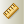 и затем, не закрывая окно Линейки, создавайте полилинию (прямую, полигон). В окне Линейки будет отображаться как длина каждого отрезка (от последнего узла), так и суммарная длина (в случае с полигоном – периметр) всего объекта.
Как заполнить колонку данными из другой таблицы?
Для того, чтобы заполнить поля одной таблицы значениями из другой таблицы («Обновить колонку» – в терминологии MapInfo) необходимо:
- иметь колонку, в которую будут записываться данные;
- иметь набор данных (колонку), которые должны быть перенесены;
- иметь условие, по которому будет происходить сравнение данных.
Если с первыми двумя все более-менее понятно, то с третьим условием необходимо разобраться подробнее. Самый простой вариант условия – если в таблице A и в таблице B есть некое поле, заполненное одинаковыми значениями и надо перенести данные по строкам, где значения полей совпадают. К примеру:
Таблица A
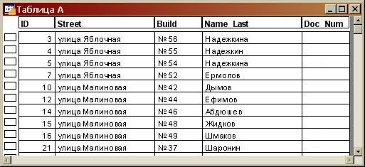
Таблица B
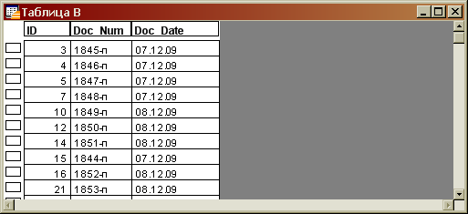
К примеру, надо перенести значения из колонки Doc_Num таблицы B в аналогичную колонку таблицы A для записей, где идентификатор ID совпадает для обеих таблиц. Для этого вызываем команду «Обновить колонку» из меню «Таблица». Появляется диалоговое окно, в котором последовательно указываем:
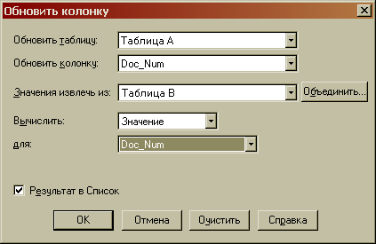- «Обновить таблицу» – имя таблицы из выпадающего списка, в которую надо записать полученные данные;
- «Обновить колонку» – имя колонки указанной таблицы из выпадающего списка, в которую надо записать полученные данные;
- «Значения извлечь» – имя таблицы, содержащей данные для заполнения. По умолчанию в этом поле записано имя таблицы из первого поля, но как только указывается иная таблица, в диалоговое окно добавляются новые поля и активизируется кнопка «Объединить».
- «Вычислить» – оставляем параметр «Значение», если не требуется иное (сумма, среднее и т.д.).
- «для» – - указываем имя колонки, содержащей данные для заполнения.
Теперь надо указать условия сопоставления разных наборов данных. Нажимаем на кнопку «Объединить» и в новом диалоговом окне указываем «Совместить по» колонкам ID из Таблицы A и Таблицы B.
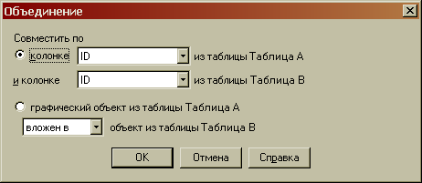После выполнения команды из Таблица A заполнится указанными данными:
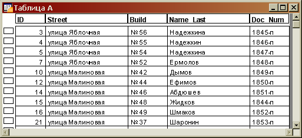Кроме прямого сопоставления совпадающих значений полей, в MapInfo можно использовать операторы географического сравнения. Т.е. можно обновить только те объекты, центроиды которых попадают в контур объекта из другой таблицы, или только те, границы которых пересекаются. Подробнее об этих операторах и их использовании можно почитать в справке MapInfo (меню «Справка» → «Справочник MapInfo Professional», раздел справки «Работа с данными в MapInfo Professional» → «Выбор с помощью запросов в MapInfo Professional» → «Географическое объединение таблиц»). В нашем же случае – для использования этих операторов необходимо в окне «Объединение» указать не опцию «Совместить по», а «графический объект из таблицы Таблица A» и выбрать один из вариантов географического сравнения:
- содержит объект из таблицы Таблица B;
- вложен в объект из таблицы Таблица B;
- пересекает объект из таблицы Таблица B.
Как выбрать все объекты одного типа?
В принципе, я уже отвечал на такой вопрос в предыдущей части FAQ. Но у приведенного тогда способа есть небольшой недостаток – в таблице с большим количеством объектов запрос через строковую характеристику выполняется медленно и требует довольно много ресурсов. Если оптимизировать запрос, то можно его составить таким образом:
Select * from ИМЯ_ТАБЛИЦЫ Where Int(ObjectInfo(obj,1))=N
где ИМЯ_ТАБЛИЦЫ – имя вашей таблицы, как оно отображается в MapInfo, а N – число из списка ниже:
| дуга | 1 |
| эллипс | 2 |
| линия | 3 |
| полилиния | 4 |
| точка | 5 |
| рамка | 6 |
| полигон | 7 |
| прямоугольник | 8 |
| скругленный прямоугольник | 9 |
| текст | 10 |
Как добавить новую проекцию в MapInfo?
Описания проекций MapInfo находятся в корневом каталоге программы, в файле MAPINFOW.PRJ. Это обычный текстовый файл, его можно открыть, к примеру, блокнотом и внести необходимые исправления. Синтаксис описания проекций весьма подробно описан в Руководстве пользователя MapInfo (файл MapInfoProfessionalUserGuide.pdf из каталога Documentation), глава 13 «Работа с системами координат и проекциями». Там же описано как задать параметры проекций.
Если, по тем или иным причинам, Руководство Пользователя у вас отсутствует, его можно скачать с сайта официального дистрибьютора MapInfo, компании «ЭСТИ МАП» – http://esti-map.ru. Или, если желаете, прямая ссылка на UserGuide версии 10.0 – (10,4 Mb).
Почему при открытии рабочего набора «слетают» подписи?
Скорее всего, совпадение двух причин:
- Местоположение подписей редактировалось вручную.
- После расстановки подписей изменялся порядок строк самой таблицы (упаковка, удаление строк, добавление новых).
Дело в том, что в отличии от подписей, расставленных автоматически, местоположение редактированных подписей хранится в рабочем наборе в явном «заякоренном» виде. Каждой подписи соответствует строка типа:
Object 5 Line Arrow Anchor (4601.4,4395.4)
где 5 – это порядковый номер строки объекта, для которого создавалась подпись.
Очевидно, что если набор данных будет переупорядочен, 5 строке может соответствовать совсем иное значение. Что, несомненно, приведет к коллизии и искажению представления подписи.
Бороться с этим никак нельзя. Это естественное поведение MapInfo. Можно только лишь удалить все подписи из окна Карты и создать их заново (меню «Карта» → «Восстановить подписи…»)
Впрочем, можно обмануть программу. Если у каждого объекта есть некий уникальный идентификатор, можно привязать «заякоренную» подпись не к номеру строки, а к значению этого идентификатора.
К примеру, в таблице PLOT есть поле идентификаторов ID, заполненное уникальными значениями. Для объекта в строке 5 это значение равно, предположим, 1001. Тогда в тексте рабочего набора вышеприведенная строка может звучать так:
Find Using PLOT(ID) Find "1001" Object CommandInfo(4) Anchor (4601.4,4395.4)
Что здесь написано?
В первой строке мы указали в явном виде, где мы ищем. Во второй – что мы ищем. И лишь в третьей – дали команду привязать подпись найдено объекта к указанным координатам. Способ чрезвычайно громоздкий, однако позволяет решить проблему. Теперь, сколько бы мы не редактировали таблицу – пока не изменим значение ID для указанного объекта, подпись останется на месте.
Как изменить значения временной колонки?
В MapInfo нет временных колонок. В MapInfo есть вычисляемые колонки. А это, надо заметить, далеко не одно и то же.
Вычисляемая колонка является производной от уже существующих данных. Вручную изменить значение ее полей нельзя, можно только изменить условие, по которому она формируется:
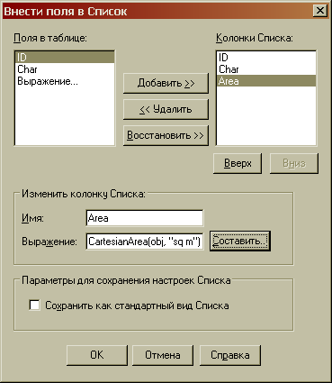Диалоговое окно редактирование вида Списка, включающее в себя настройки вычисляемых колонок, вызывается через команду меню «Список» → «Отобрать поля…». Окно Списка, естественно, должно быть активно. Как видно из скриншота, в примере есть 2 фактических поля и 1 вычисляемое – «Area», значения которого заполняются по формуле «CartesianArea», т.е. площадь объекта. Данная колонка видна только в окне Списка, и не видна ни в диалоге настроек подписи Карты, ни в диалоге составления запроса. В принципе, ее функция чисто справочно-оформительская, т.к. в окно Отчета она все-таки выводится.
Настройки отображения таблицы, в том числе и вид и содержание временных колонок, можно сохранить для последующего открытия. Эти данные хранятся в meta-разделе TAB. Убрать их можно либо удалив вручную раздел из файла, либо сбросив чек «Сохранить как стандартный вид Списка» в диалоге отбора полей.
Как сделать объект самым верхним на слое?
Никак. MapInfo – ГИС, а не графический редактор. С точки зрения топологии, перекрывающиеся объекты в одном слое – предельно некорректны. Порядок объектов в MapInfo задается порядком слоев и никак иначе.
Относительно же расхожего мнения, что достаточно просто вырезать объект и вставить обратно, чтобы он оказался последним в Списке и, соответственно, отображался первым. В Списке он, безусловно, будет последним. А вот на Карте – нет. Так что эта операция ни к чему не приведет.
Дело в том, что MapInfo не хранит объекты в памяти, а пересоздает их «на лету». Этим достигается завидное быстродействие программы, как ни парадоксально звучит, дешевле создавать объекты заново при каждом обновлении окна, чем хранить их в памяти. Но, как следствие, порядок создания объектов в текущем виде окна подчиняется несколько более сложным зависимостям, нежели простое положение объекта в списке.
Как перестроить индексы?
При попытке открытия таблицы MapInfo выдает такое предупреждение?
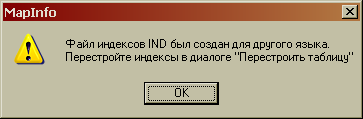Бороться с этим просто. Можно действительно перестроить таблицу (меню «Таблица» → «Изменить» → «Перестроить»), сняв все отметки с опции «Индекс».
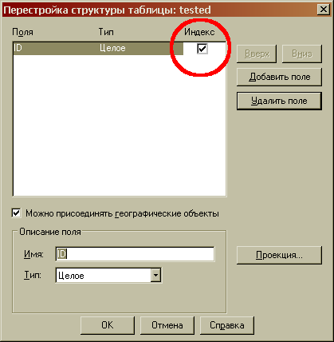Можно просто удалить файл *.IND из набора файлов MapInfo. Но тогда при каждом открытии таблицы будет выдаваться предупреждение, что индекс недоступен. Чтобы этого не происходило, надо в тексте файла TAB удалить все фразы типа:
Index N
где N – порядковый_номер_индекса
Почему после вставки объекта экран «прыгает»?
Т.е после Copy-Paste окно Карты центрируется по центроиду вставленного объекта? Если да, то решение зависит от версии программы. В MapInfo 8.0 это было «багой», в версии 8.5 баг поправили, а в MapInfo Professional 10.0 это уже «фича» :)
«Настройки» → «Режимы» → «Окно Карты» → «Редактирование» → «Масштабировать после вставки объекта»
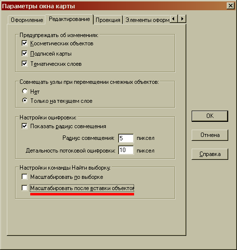Как отключить автоматическую перерисовку окна?
Даже для такой быстрой программы, прорисовка окна – ресурсоемкое мероприятие. Особенно, если его загрузить сотней-другой растров (хотя может хватить и одного, но большого). Избежать подобных проблем можно, отключив автоматический рендеринг Карты. Понятное дело, что никаких специальных опций настройки для этого нет, но есть окно MapBasic, в которое вводим:
Set Event Processing Off
если надо отключить прорисовку во все окнах Карты, или:
Set Map Redraw Off
если надо отключить прорисовку в активном окне Карты.
Теперь действия, вызывающие изменения Карты, такие как добавление/удаление слоя, изменение порядка слоев и некоторые другие, будут происходить без перерисовки окна. Для включения автоматической перерисовки пишем в окно MapBasic соответственно:
Set Event Processing On
или:
Set Map Redraw On
Хотя, должен заметить, мне лично подобные манипуляции приносили только путаницу и неразбериху, без какой-либо видимой пользы.
Как избавиться от масштабного коэффициента для вновь открываемых растров?
Снять чек с опции «Автомасштаб по растровому слою» в окне настроек Карты (меню «Настройки» → «Режимы» → «Окно Карты…» → вкладка «Оформление»):
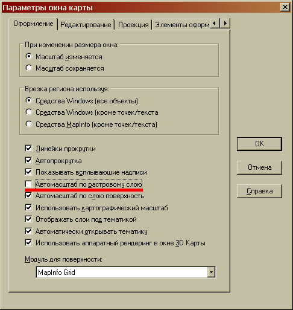Как разместить текст по кривой?
Как разместить именно текст, т.е. текстовый объект, я не знаю. А вот подписи разместить вдоль ломаной линии, повторяя ее изгибы, вполне можно. Достаточно выставить опцию «По кривой» в секции «Положение» диалога настроек подписей слоя:
Результат будет, к примеру таким:
Не-линейные объекты (точки, полигоны) при выборе указанной опции будут подписаны так, как будто выбрана опция «По горизонтали».
Как можно обрезать/сшить растр?
Вообще-то – никак. MapInfo не содержит инструментов для редактирования изображений. Подразумевается, что, прежде чем быть использованными в качестве растровой подложки, изображения должны быть подготовлены в ПО, отличном от MapInfo.
Вместе с тем, MapInfo обладает неким функциональным паллиативом, позволяющим, в ряде случаем, решить поставленную задачу.
«Сшитый» растр в MapInfo образуется «мозаикой» из отдельно зарегистрированных с минимальной погрешностью фрагментов. Для облегчения регистрации подобных фрагментов существует утилита Mozaic от компании «ЭСТИ МАП».
Обрезать же растр можно, так же, как и векторный слой, при помощи врезки. В окне Карты выбираем некий объект, по контуру которого необходимо скрыть изображение, и вызываем команду «Выбрать область врезки» из меню «Карта».
При импорте DXF вместо текста кракозябры. Как исправить?
Совет первый и универсальный – воспользуйтесь Универсальным Транслятором (утилитой из стандартной поставки MapInfo). Если же необходимо использовать именно встроенный механизм импорта, то придется чуть-чуть потрудиться.
Дело в том, что AutoCad и прочие подобные ему программы сохраняют файл DXF в кодировке Windows, в нашем случае – Windows-1251, она же Microsoft code page 1251 (CP1251), а вот MapInfo использует кодовую страницу DOS, т.е. OEM 866. Из-за того, что в разных кодировках каждому байту соответствуют различные символы, возникает путаница. Исправить это можно при помощи любого текстового редактора, который умеет перекодировать текст «на лету», например Bred или AkelPad.
На примере AkelPad'а:
- Открываем исходный DXF (который является, по сути, обыкновенным текстовым файлом). Кодировка, скорее всего, будет Win-1251 (ANSI – кириллица), хотя возможны и более экзотические варианты.
- Выбираем «Сохранить как» и указываем в опциях кодировку «866 OEM (русская)».
- Импортируем получившийся файл в MapInfo.
- …
- PROFIT
Кстати, подобным образом можно бороться и кракозябрами в AutoCad после экспорта из MapInfo, только сохранять DXF уже надо в кодировке Win-1251.
Как узнать площадь в процессе изменения полигона?
Задайте в настройках подписей слоя показывать подписи из выражения: Area(obj, "sq m")
Теперь, при изменении формы площадного объекта (местоположение узлов) в подписи будет динамически отображаться его площадь. В случае если измерения ведутся не в плоской системе координат, лучше использовать для вычисления площади не Area, а функцию CartesianArea(obj, "sq m").
Для линейных объектов, для отображения их текущей длины, следует использовать функцию ObjectLen(obj, "m") с аналогичным результатом.
Как в MapInfo выполнить скрипт?
Помимо очевидного способа – открыть окно MapBasic (кнопка «Показать/скрыть окно MapBasic» на Панели Инструментов) и ввести код скрипта, можно использовать тот факт, что Рабочий Набор, по сути, является скриптом MapBasic. А значит, можно использовать файлы с расширением WOR для хранения и запуска на выполнение собственных наборов команд.
Для того, чтобы MapInfo распознала текст как рабочий набор, необходимо в начале текстового файла записать формализованный заголовок:
!Workspace !Version 600 !Charset WindowsCyrillic
и сохранить файл с расширением WOR.
После заголовка можно писать свои наборы команд, используя те же правила, что и при вводе их в окно MapBasic: запрет на использование циклов, объявлений и т.д. Достаточно вызвать созданный Рабочий Набор из MapInfo или, при правильно настроенной ассоциации файлов – напрямую из ОС, и скрипт будет выполнен.
Чем можно посмотреть файлы MapInfo?
Привести конкретный перечень программ, умеющих читать формат файлов MapInfo, довольно тяжело, так как их весьма много. А уж умеющих работать с обменным форматом MID/MIF – так и вовсе несть числа. Некоторые умеют это делать чуть лучше, некоторые – чуть хуже, но у всех есть один небольшой недостаток – они не умеют работать с рабочими наборами MapInfo (файлы *.WOR). Дело в том, что рабочие наборы – это попросту набор команд на внутреннем языке MapInfo – MapBasic, или, если угодно, макросы, в которые записаны действия пользователя. Естественно, что никто, никакое стороннее ПО, кроме самой MapInfo, не умеет интерпретировать этот язык и, соответственно, открывать готовые рабочие наборы.
Поэтому, если нужно именно просмотреть данные, подготовленные в формате MapInfo, лучше, на мой взгляд, воспользоваться «родным» вьювером – программой MapInfo ProViewer. MI ProViewer является полным аналогом MapInfo Professional, и в интерфейсе и в списке поддерживаемых форматов, за исключением того, что не позволяет редактировать данные.
Скачать последнюю версию MI ProViewer можно либо с сайта производителя, компании «Pitney Bowes Software Inc.»:
английская версия MI ProViewer (потребуется регистрация)
либо с сайта официального дистрибьютора продукции Pitney Bowes в странах СНГ, компании «ЭСТИ МАП»:
русифицированная версия MI ProViewer.
Где можно почитать о MapInfo?
По традиции, last but not least, несколько ссылок на сайты с материалами по MapInfo:
- Список национальных порталов MapInfo
- Несколько статей от официального дистрибьютора MapInfo, компании «ЭСТИ МАП»
- FAQ по MapInfo от «ЭСТИ МАП»
- Коллекция ссылок на документацию на народном сайте MapInfo
- FAQ по геоинформационным системам на GeoFAQ
- Статьи по вопросам ГИС, в том числе MapInfo, на сайте проекта GIS-Lab
- Краткая инструкция по MapInfo в 12 частях на сайте программиста SER851
- Сайт А. Михайлова, посвященный цифровому картированию и программированию для ГИС
- Несколько статей по отработке стандартных решений в MapInfo на сайте Лаборатории АгроГИС-технологий
- 5 статей, освещающих различные вопросы MapInfo на сайте программиста А. Карасова
- Небольшой FAQ по MapInfo от codeLocker'а
Также можно поискать ответ на свой вопрос по форумам: